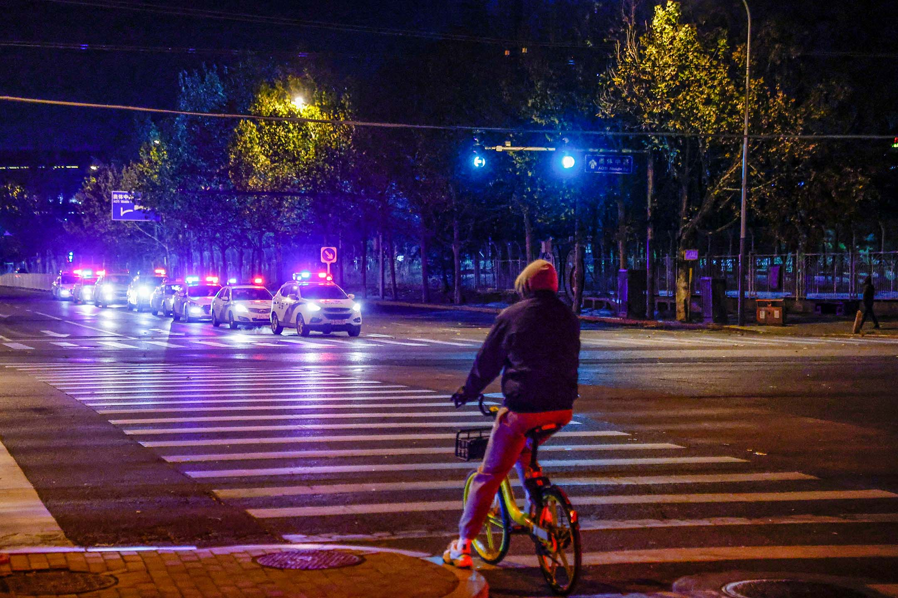
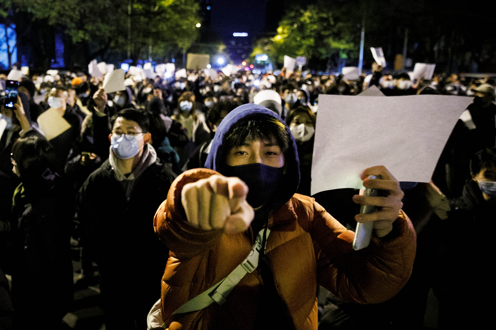
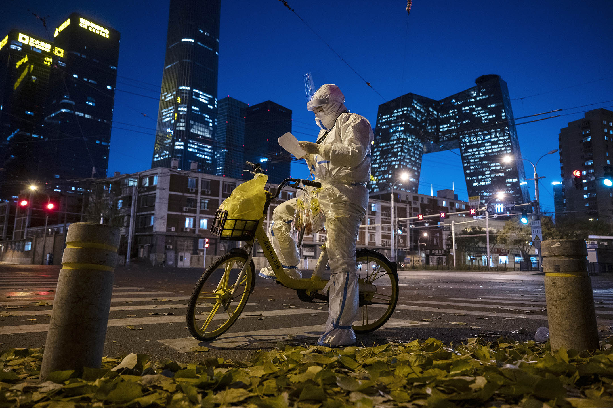
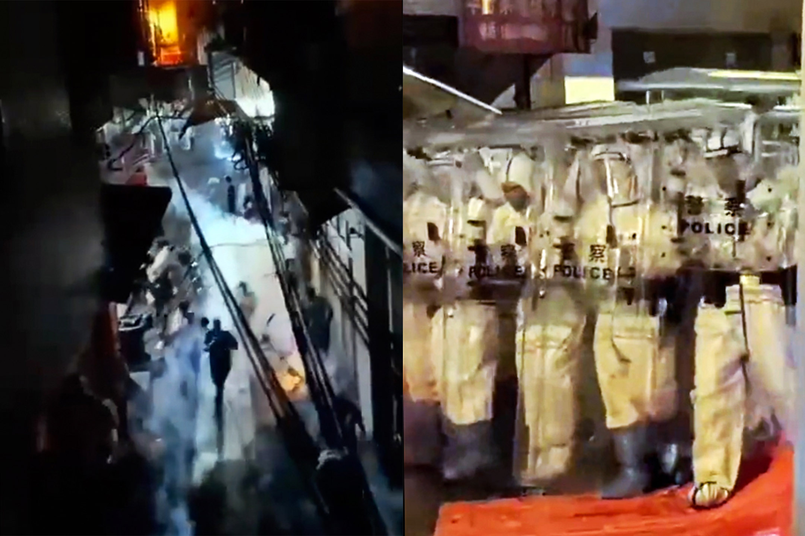
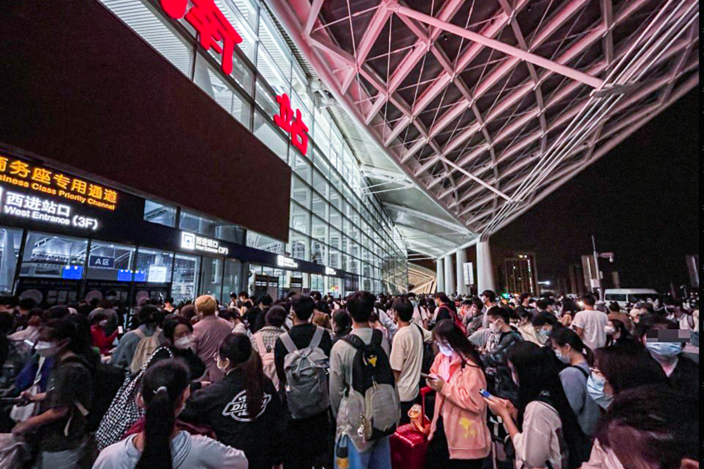

【更新】新疆大火頭七，抗議氣氛轉平淡，民間信息不明確，政府開始施壓
Table of Contents
各地防疫政策釋放相反信號。

Figure 1: 2022年11月29日，警車在北京的一條街道上巡邏。攝：Thomas Peter/Reuters/達志影像
端傳媒編輯部
刊登於 2022-11-30
11月24日新疆烏魯木齊大火，今日是頭七。其引發的反封控抗議，自11月26日爆發，27日擴散，28日局部持續後，29日到30日轉趨平淡，網傳有個別抗議還在發生，但信息難以核實。
對於抗議的情況，中央層面還在保持沈默，暫無定性，也似乎還沒有統一口徑。外交部發言人趙立堅29日回應路透社記者關於抗議的提問時，甚至卡殼。
也還未有由中央統一發布的關於封控管理的文件，比較明確的只有中央政法委29日指要堅決打擊敵對勢力滲透破壞，國務院聯防聯控機制綜合組在29日的新聞發佈會上表示封控應「快封快解、應解盡解」，但不涉具體措施。
應對群體事件的主體暫時還是各地地方政府，且應對方向上出現差異。浙江省委宣傳部29日發布一篇《人民至上不是防疫至上》的文章，30日上海出台文件稱將會收緊防控；其他城市則流傳當地正加緊研究的消息。
抗議並非完全沒有得到回應，北京、武漢的多個小區、街道在27-28日解封，部分地方暫緩陽性人員轉運、允許符合條件的居家隔離等舉措也有出現，這類應對以疏通社會壓力和怨氣為主。不過，警方積極提前介入社會抗議的策略目前也較明確，如杭州西湖銀泰哀悼活動，就遭警力提前部署；網傳警察也加入telegram群組盯梢；有影片流傳深圳、成都等街頭出現大批警察；29日的上海則出現警察在地鐵裏逐個檢查市民手機的現象。關於在抗議現場被帶走的民眾的下落，社會面目前也難有明確消息。有抗議者向路透社表示，警察開始對他們進行調查。
還有一個月就元旦新年了，清華大學發布讓學生提前離開學校返鄉的通告。29-30日，北京多所高校則同時轉陽。30日凌晨，廣州南站（高鐵站）出現大批人員滯留站內、睡倒一片的現象。有網民說這些是剛從方艙出來的人，也有人說這些是連夜被疏散的大學生。有網民擔心這些人買不到票又不被當地接收。鐵路部門則呼籲，近期氣溫下降，建議旅客不要在南站過夜。
在香港，保安局局長鄧炳強則「快過」中央和香港特首，率先為反封控抗議「定性」。他聲稱香港的聲援活動「再現顏色革命雛形」，有可能違反《國安法》，並指內地生若違法也會被捕。

Figure 2: 2022年11月27日，北京，烏魯木齊大火的封控抗議潮，民眾拿著白紙示威。
中央政法委稱堅決依法打擊敵對勢力滲透
始於烏魯木齊大火的封控抗議潮在11月27日晚到達高潮，北京、上海、廣州、成都等城市均爆發了較大規模的集會抗議活動。據新華社，中央政法委員會 11月28日召開全體會議，稱要「及時疏導化解矛盾糾紛，幫助解決人民群衆實際困難」，打擊「敵對勢力滲透破壞活動」和「擾亂社會秩序的違法犯罪行為」， 強調「堅決維護國家安全和社會穩定」。
這次會議被外界普遍解讀為，中共將對已持續三日的封控抗議潮進行「鎮壓」。
由於此次抗議潮的主要訴求是反對「動態清零」下長達三年的嚴苛封控，國務院聯防聯控機制於11月29日臨時加開發布會，對當前防疫政策又一次作出解 讀和「回調」。發布會上，國家衛健委新聞發言人、宣傳司副司長米鋒稱，封控管理要「快封快解」「應解盡解」，減少因疫情給群衆帶來的不便。並重申，要持續 整治層層加碼，對群衆合理訴求及時回應和解決。
此次發布會還提出，要加快提升80歲以上老年人疫苗接種率，「應接盡接」；60-79歲老年人接種率要繼續提高。目前，中國大陸60歲以上人群疫苗第一劑接種率已超過90%。
同一時間，中國網絡審查部門「中央網信辦」在抗議潮爆發前發布的文件引發輿論關注。11月28日，一篇名為《網信辦新規：點贊「不良信息」將被追責，12月15日正式生效！》的 文章在朋友圈刷屏，文章稱，新的網絡評論審查規定首次將「點贊」視為評論的一種，此後點贊不良信息或將被追責。文中所指新規出台於11月17日，文件將跟 帖所指「評論」定義為：互聯網站、應用程序以及其他具有輿論屬性或社會動員能力的網站平台的評論、回覆、留言、彈幕、點贊等互動形式。跟帖服務提供者 應建立「先審後發」機制，及時處置不良信息並向網信部門報告；違反本規定，由國家和地方網信部門依照相關法律法規處理。
11月29日，網絡流傳出兩張「網信辦視頻調度會議」內容的截圖，圖中信息顯示，各級網信部門近期將加強對翻牆工具、售賣翻牆軟件以及傳授科學上網 技巧的查處，並將在11.24遇難者頭七、12.9國際反腐日、12.10國際人權日加強前置審查。調度會議稱，上海出現惡性政治口號，高校學生政治性聚 集明顯，境外媒體抹黑增多，各網站要加強審查。

Figure 3: 2022年11月25日，北京，一名防疫員穿著防護服並檢查一份名單，她對接受健康監測的人進行核酸檢測。
各地防疫政策釋放相反信號
封控抗議潮漸冷後，公衆的關注重點開始轉向防疫政策是否將作出微調。然而，同一天不同省份、城市發布的信息卻釋放出相反的信號。
11月29日，國務院聯防聯控發布會之後，北京朝陽宣布，老年人、上網課學生以及嬰幼兒等無社會面活動人群可不再參加核酸檢測。這一被稱為「精準免 檢」的措施，於11月27晚至29日間已在多個城市實施。據財新報道，11月27日晚，廣州除海珠區、番禺區、天河區、白雲區四區外，其他長期居家老人、 每日網課學生、居家辦公者等無社會面活動的人員，若無外出需求，可不參加核酸檢測。北京除朝陽區外，也有小區居委會向居民發布「精準免檢」通知。
近期疫情並不嚴重的上海在11月29日收緊了疫情防控措施。繼11月24日出台抵滬「5+0」政策後，11月29日受疫情影響閉園的的上海迪士尼開 園僅4天后，再次關閉。同時，上海還加強防疫物資儲備。同日，上海黃浦區衛健委要求委屬各單位結合突發公共衛生事件發展情況和趨勢，儲備防疫物資，儲備數 量不少於60天，做到「寧可備而不用，不可用而不備」。而上海近期疫情與北京廣州相比，並不嚴峻，11月26日起連續5天新增為三位數。公衆擔心，上海再 次封城。
搖擺的不僅僅是上海。11月29日，據《財經十一人》報道， 山東擬投資超230億元興建方艙。報道稱，2022年第16至21期的山東省政府專項債券報告中，有119份與方艙醫院、隔離點相關的專項債券實施方案， 涉及除青島之外15個地級市，總投資超230億元，新增床位超20萬個。今年5月16日，國家衛生健康委黨組書記、主任馬曉偉署名文章指出，提前規劃永久 性方艙醫院、集中隔離點，確保一旦發生疫情迅速啓用。不過，尚無證據顯示山東擬建方艙為永久性方艙。
同一天，浙江省委宣傳部微信公衆號「浙江宣傳」發布的文章《「人民至上」不是「防疫至上」》，似乎顯示當地防疫的天平沉向了「放開」的一端，或至少 將更重視民衆的訴求。文章稱，疫情防控是為了防住病毒，不是為了防住人；從來只有「人民至上」，沒有所謂的「防疫至上」。所有的選項，都是我們通往這個目 標（回歸正常）的「橋」和「船」，而不是簡單地把人防住，不計成本盲動蠻幹。

Figure 4: 2022年11月29日，廣州的示威活動，警察以催淚彈驅散群眾。
廣州海珠區後滘發射催淚彈，延續的抗議在警方重力部署下告吹
29日晚，廣州海珠區後滘村懷疑因防控出現貨物運輸障礙，引發市民抗議。據附近居民拍攝的視頻片段顯示，約11時至12時左右，防暴警察在一條狹窄的小巷裏向人群擲催淚彈，另一段視頻則顯示，有抗議者在路口回扔啤酒瓶與防暴警察對峙。目前，難以確定兩條視頻的先後順序。此外，有目擊者稱，看到部分抗議者被帶走。
後滘是廣州海珠區的數個城中村之一，海珠區自11月5日開始疫情封控以來，已5度延長封控期限。而據網民披露，後滘共分10個網格區，不同網格之間 無法通行，市民也不能離開後滘片區。然而，後滘村聚集了大量製衣廠與製衣工坊，封控使得工廠運作艱難，貨物運輸甚至需要向社區支付每包一百人民幣的高額運 輸費。最終導致抗議的發生。
據當地市民，後滘的防暴警察直至30日早6時都未離開。
同時，封控抗議繼續零星發生。
北京的抗議者們原訂於29日晚在海淀四通橋附近再度聚集，唯警方在主要地鐵站、大學校園、公園等地均部署了大量警力，甚至對乘客隨機進行手機盤查， 及查看是否攜帶有空白紙張。29日的四通橋行動最終因大量警力告吹。路透社也表示，中國開始調查參與抗議的示威者，有參與北京亮馬橋活動的抗議者被警方調 查並要求做筆錄。
值得一提的是，29日也有深圳市民曾號召在華強北、市民中心聚集抗議，與北京情形一樣，警方提前獲知了消息並在覈心地帶布置大量警力，抗議也未能成行。上海市民則拍攝到警方隨機在地鐵中截查乘客手機的場景。
此外，據網絡中流傳出的視頻信息顯示，山西太原萬柏林區、山東濟南歷下區城基中心、東莞南城中信新天地等多處居民，因要求解封與防疫人員產生衝突，爆發小規模抗議。

Figure 5: 2022年11月29日，廣州南站車站前擠滿了乘客。
廣州及北京高校要求學生提早返鄉，北京高校擬在校內興建方艙
為平息學生的抗議浪潮，北京及廣州至少十所高校，以疫情嚴重為免學生受到感染為由，通知學生可提前返鄉，未完成的課程與期末考試將在線上進行。清華大學28日甚至開通學生返鄉專線，在11月29日至12月4日期間，免費送學生至北京各火車站及機場。
有廣州學生在社交媒體中表示，廣州 市29日下發緊急通知，所有高校需立刻遣返，最晚12月4日離開。該生所在院校輔導員，甚至要求學生們儘量在30日早離開，大量學生因此29晚收拾行李準 備離校。此外，廣州番禺區板橋村發布倡議書，稱疫情將持續一段時間，不排除大規模長時間封控，因此倡議無訂單的工廠提前放假返鄉。一些29日旅客塞滿廣州 南站的照片，及凌晨擁堵的出城車隊照片，也佐證了這些信息。
與此同時，北京理工大學學生截圖校內通知稱，因學校疫情風險等級越來越高，校方決定將宇航樓、附小、研教等改建為方艙。除北理之外，北京化工大學、北大、北外等高校學生也表示收到校內建方艙的通知，並要求寒假返鄉的同學儘快在12月初前的「窗口期」離校。
30日下午14時許，廣州番禺區、天河區、荔灣區等全部或部分解除疫情防控臨時管控區。海珠區提出密接原則上集中隔離，符合條件的居家隔離。
本刊載內容版權為端傳媒或相關單位所有，未經端傳媒編輯部授權，請勿轉載或複製，否則即為侵權。